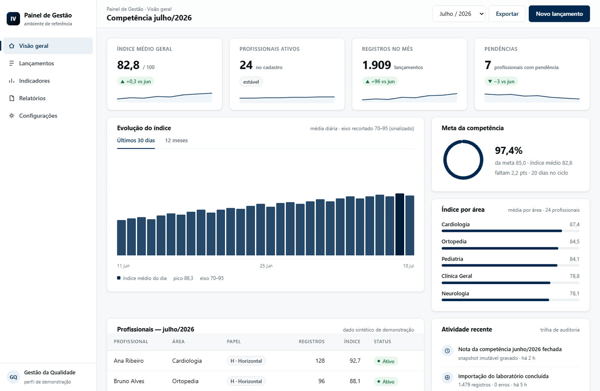

Quem constrói, opera. Quem opera, atende.
A IV Soluções é uma casa de engenharia de Belo Horizonte. Nossos sistemas não nasceram em laboratório: nasceram dentro de operações reais — hospital, condomínio, compras públicas — resolvendo problema que custava tempo e dinheiro. Por isso o nosso compromisso não termina na entrega: a gente opera, monitora e evolui o que constrói.
Todo sistema da casa passa pelo mesmo caminho.
O problema é entendido na fonte, com número — nunca por suposição.
O sistema nasce do seu processo real, não de template adaptado.
Código e tela passam por duas auditorias independentes antes de publicar.
Disponibilidade e erros monitorados automaticamente, backup 2/2h no sistema mais crítico, e quem construiu é quem atende.
O que é inegociável por aqui.
Sistemas web e mobile
Do painel de gestão ao aplicativo na mão do usuário — a mesma engenharia de ponta a ponta.
IA aplicada ao negócio
Assistentes e automação onde há retorno de verdade — nunca IA por enfeite.
LGPD por padrão
Privacidade desenhada desde a arquitetura do dado. Nas telas públicas, só dado fictício ou sintético.
Suporte de quem constrói
Canal direto: você fala com quem fez o sistema funcionar — sem fila de call center.
Acessibilidade por régua
Contraste e leitura verificados por medição em cada entrega — não por opinião.
Verdade verificável
Cada afirmação nossa tem lastro. Preferimos um fato medido a dez adjetivos.
A linguagem dos painéis IV.
Todo sistema nasce de um mesmo padrão visual: denso onde trabalha, limpo onde descansa. Ao lado, um exemplar do padrão com dados 100% sintéticos.

Traga um problema real.
Se ele é de gestão e está custando caro, é provável que a gente já tenha construído — e operado — algo parecido.